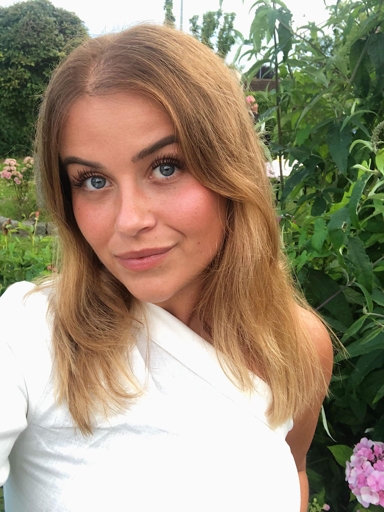

CELINA NIELSEN
Om mig og mit CV
CV.
Navn.: Celina Nielsen
Adresse.: Ishøj Boulevard 65 1.3, 2635 Ishøj
Telefon.: 20 97 54 64
Fødselsår.: 03-04-1999
Tidligere beskæftigelse.:
2018 KOBRA Copenhagen
2018 - 2019 Sport24
2017 Honeys Villa (Ekspedition og salg)
2016 - 2017 Baresso (Ekspedition og salg)
2015-2016 Hunkemöller (Oprydning, forfaldent arbejde)
2015 Sunset Boulevard (Ekspedition og salg)
2013-2015 Trænet børn i gymnastik, 2 hold ugentlig – Ishøj Gymnastik Forening
Uddannele.:
2020 Multimediedesigner (KEA)
2019 - 2019 Højskoleophold i udlandet
2015 - 2018 3.G (HHX) Handelsgymnasiet
2007- 2015 9 klasses afgangseksamen (Ådalens Privatskole)
Hvem er jeg?
Jeg hedder Celina Nielsen, er 21 år gammel, og opvokset, og bor i Ishøj. Jeg blev færdig med HHX i sommeren 2018, efterfulgt af 2 sabbbatår, hvor jeg har arbejdet i henholdsvis Sport24 og KOBRA Copenhagen. I mit andet sabbatår valgte jeg at tage ud og rejse med højskole i to måneder, hvor jeg oplevede verden med en stor gruppe mennesker. Det at opleve verden på den måde har givet mig en enorm rejselyst, og ønsket om at opleve så meget af verden som muligt. Herudover bruger jeg en del tid på fitness. Her kobler jeg af, har mig selv i fokus og får fornyet energi. Herudover elsker jeg at bruge til sammen med mine venner og familie.
I dag er jeg under uddannelse som mulitimediedesigner på Københavns Erhvervsakademi, KEA. Jeg fik interesse i denne uddannelse igennem mit arbejde i KOBRA Copenhagen, hvor nogle af mine arbejdsopgaver bestod i at være kreativ, designe og være en del af de sociale medier som Instagram og Facebook.